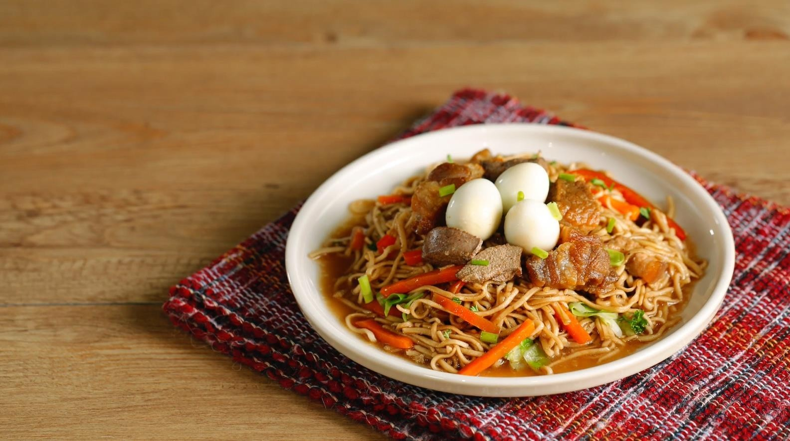
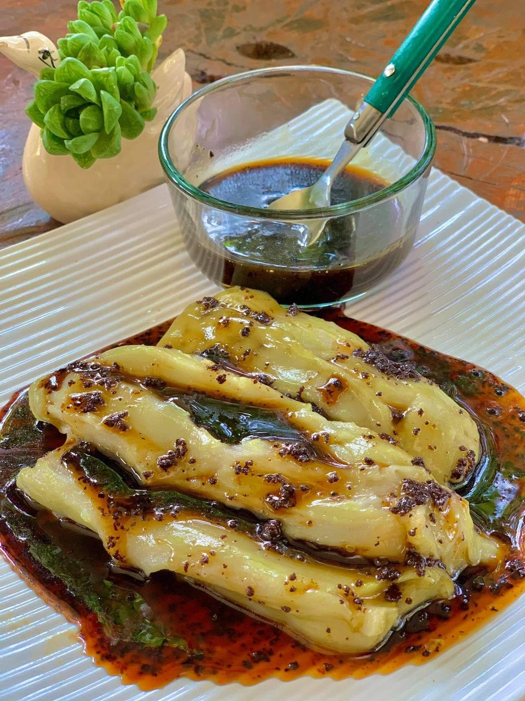
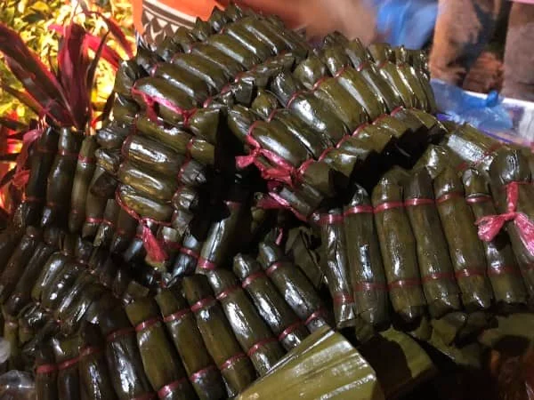
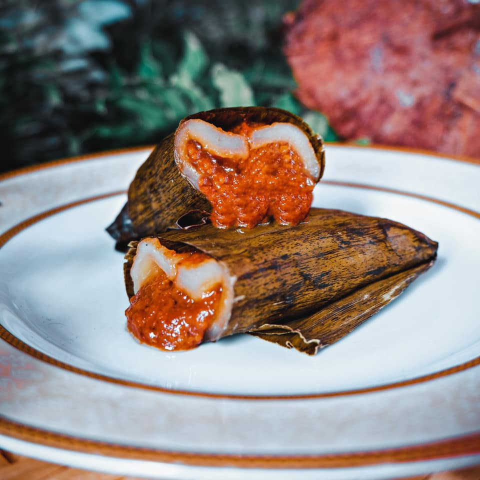
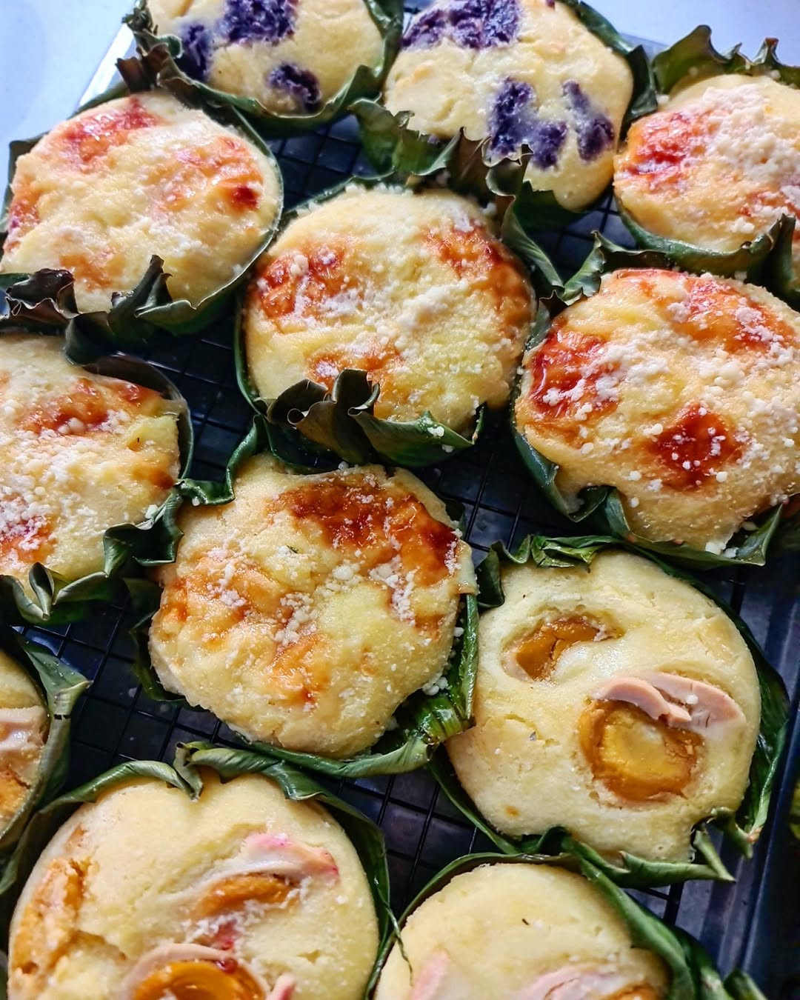
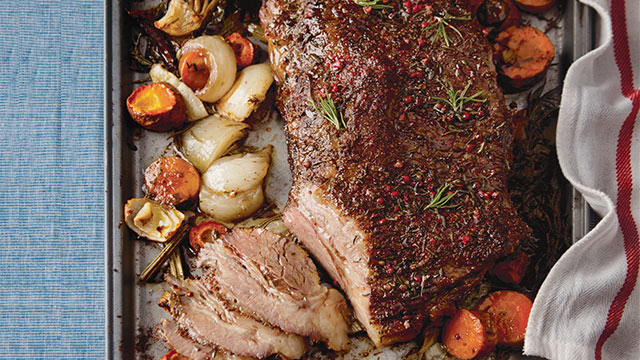
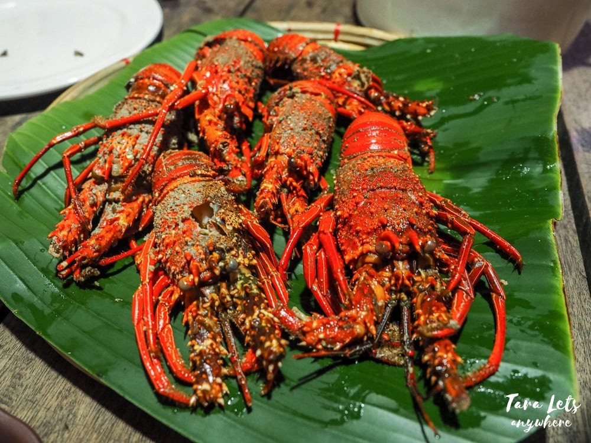
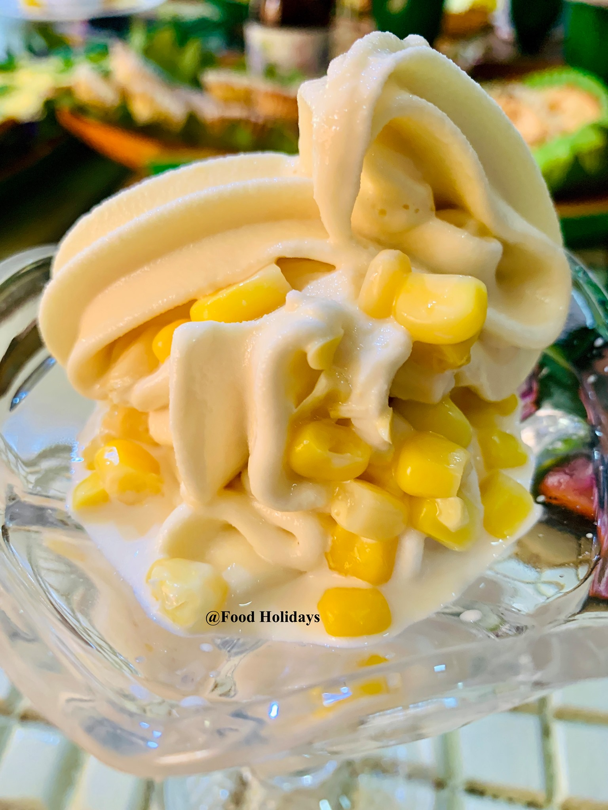
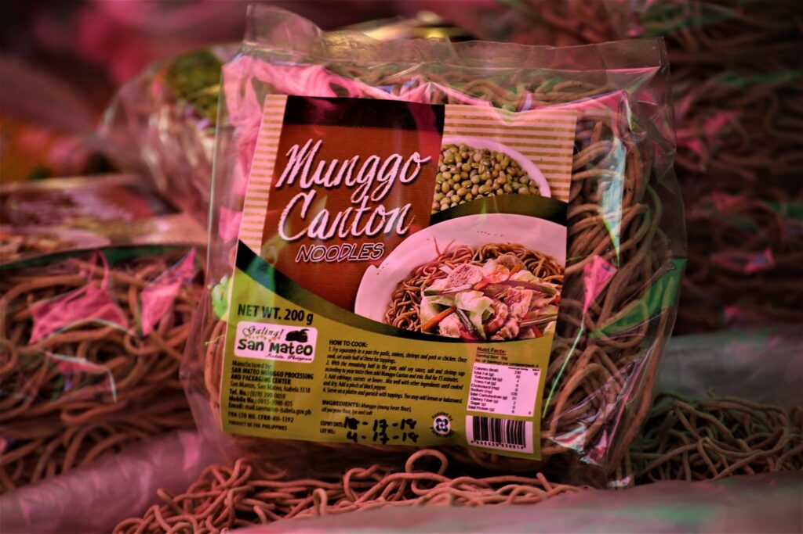
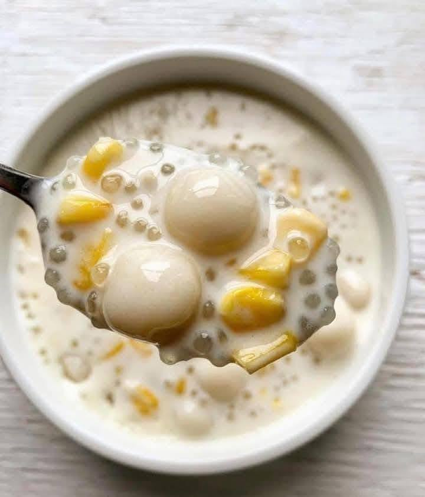

Pancit Cabagan
A famous noodle dish from the town of Cabagan, Pancit Cabagan features thick, saucy miki noodles stir‑fried with savory seasonings and typically topped with crispy lechon carajay (pork belly), boiled quail eggs, vegetables, and sometimes stewed pork liver. It’s a beloved comfort food and a culinary emblem of Isabela.

Binallay
Binallay is a traditional rice cake made from ground glutinous rice, steamed in banana leaves, and served with native sugar or topped with rich latik (coconut caramel). Its soft texture and sweet flavor make it a popular local kakanin (rice delicacy).

Inatata
Inatata are small, bullet‑shaped sticky rice cakes wrapped in banana leaves, cooked slowly over woodfire. Traditionally made during Holy Week and festive occasions, these chewy rice treats combine glutinous rice, coconut, and sugar for a subtly sweet flavor.

Moriecos
Moriecos is a suman variant made with ground glutinous rice (galapong) filled with sweetened latik and wrapped in banana leaves. Lightly toasted during cooking, it has a smoky, rich taste that makes it a favorite dessert in Isabela.

Bibingka
Bibingka is a classic Filipino rice cake made from ground rice and coconut milk, traditionally baked in a clay oven lined with banana leaves. It has a slightly smoky aroma, soft interior, and often comes topped with cheese or coconut for a delightful snack or merienda.

Lechon Baka
Lechon Baka is a slow‑roasted beef dish rooted in Isabela’s cattle‑raising tradition. The beef is roasted over charcoal until tender and juicy, seasoned with herbs and spices for a smoky, rich flavor. It’s a local specialty often served at fiestas and celebrations.

Ulang (Giant Freshwater Prawn)
Ulang refers to giant freshwater prawns prized for their sweet, succulent meat and rich, flavorful heads. They’re commonly grilled, steamed, or sautéed in butter‑garlic sauce, showcasing a fresh taste of local seafood.

Cornbetes
Cornbetes is a creamy, corn‑based ice cream made from locally grown corn, known for its natural sweetness and hint of roasted corn aroma. It’s a refreshing local dessert that blends familiar flavors with frozen indulgence.

Balatong
Balatong is a hearty, home‑style mung bean (munggo) stew simmered until tender and flavorful. Often enriched with aromatics like garlic and ginger and finished with leafy greens, it’s traditionally enjoyed with warm rice.

Pinataro
Pinataro is a warm, sweet dessert made with glutinous rice balls, saba bananas, and root crops simmered in rich coconut cream. This creamy Filipino comfort dish is typically served as merienda, especially on cool or rainy days.